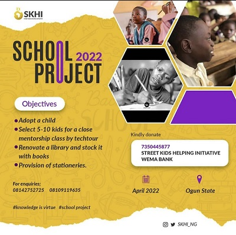
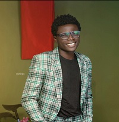

About Us
Street Kids Helping Initiative(SKHL) formerly Street Love(SL) is a voluntary organization which aims at reaching out to the kids/children on the street and impacting their lives positively.
SKHI is also about providing basic needs for the less priviledged especially the children on the street hereby helping them become great individuals in life.
Founder
Fondly called MCM, Oladimeji Michael Caxton-Martins is a Podcaster, Event Host and OAP. Oladimeji is currently a Creative producer and radio presenter at Alvary creatives. He is also the podcast host of "The Random session". In his capacity as a producer, he also produced the official soundtrack for the movie "HANDICAPPED"
As a podcaster, his work addresses the vacany in the psychological and emotional makeup of most young people. He notes that "the world would be a better place if there were less talk and more action towards the situation we find ourselves in". In 2017, he founded the NGO STREET LOVE NIGERIA (Street Kids Helping Initiative)& currently serves as coordinator. He also volunteers for many other NGO's including "Executive Helping Initiative", "Anti suicide and depression squad".